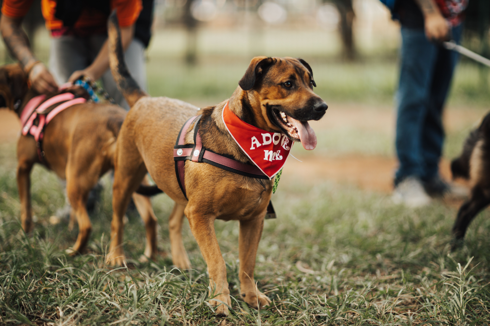
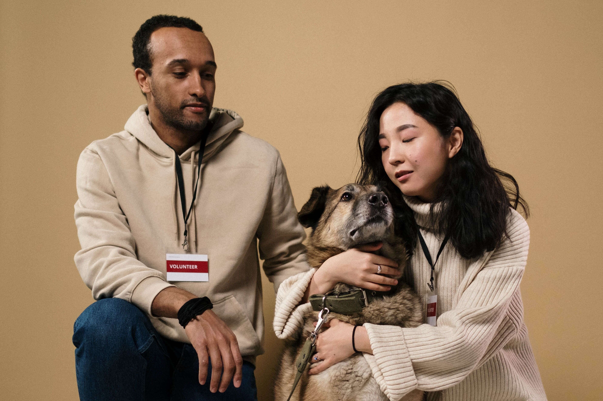

Vaasan Eläinsuojalla asuu kissoja ja koiria, jotka kaipaavat omaa sohvannurkkaa. Tutustu niihin täällä ja jätä adoptiohakemus suoraan netissä.

Rapsutuksia luvassa joka päivä!

Kun adoptoit, annat kodin yhdelle eläimelle ja vapautat paikan seuraavalle apua tarvitsevalle.